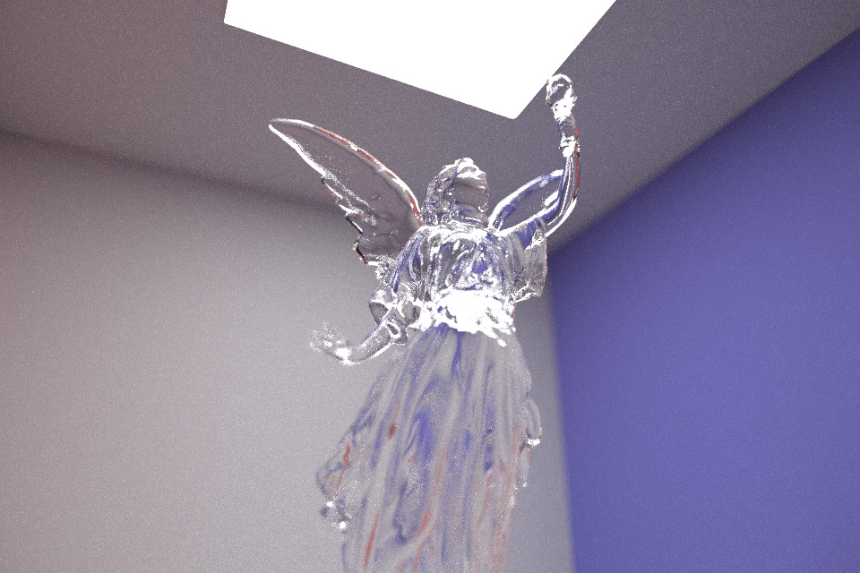

CS184 Final Project Proposal
- Title, Summary and Team Members
- Title: Path Tracing Lenses and Contrast-based Autofocus
- Summary: In our final project, we want to implement an extension of Project 3, which will enable autofocus to mimic a camera in reality. The main idea is ray tracing, and we will implement ray tracing for both mirror and glass materials and microfacet materials.
- Team members: Qingsong Ji, Lauren Leung, Shuyao Zhou, and Haodi Zou.
- Context: In Project 3-Part 4, we are supposed to enable depth of field effect using a single thin lens. In the final project, we will extend it to multiple lenses to mimic a camera in reality so that we can create more artistic outcomes with some images focusing on objects and other images focusing on backgrounds. This task is challenging in implementing the autofocus part because we need to consider the object’s relative positions to the lenses. We are going to solve this problem with the ray tracing algorithms we learned in relevant papers.
- The kind of images we will create:
- Our goal is to implement ray tracing through compound lenses and also contrast-based autofocus. We will show these results through pngs of image renders. We will show some examples of images through different lenses, with and without autofocus. We will also show some examples of images with the naive implementation of contrast-based autofocus as described in the Sp16 Project 3-2 spec, and our improved algorithm.
- The new lighting effect with compound lenses:

- How we will measure the quality / performance of our system:
- We will measure the quality and speed of our contrast autofocus algorithm by comparing how long it takes to complete versus the naive implementation. At this time, we hope to achieve > 2x speed up and quality increase that is visually discernible.
- Questions we plan to answer with our analysis:
- What formulas to use on compound lenses?
- What are some effective ways to modify the search algorithm to find the best sensor depth for the current image patch?
- What are some effective ways to modify the focus metric?
- Will autofocus perform better on microfacet materials than glass materials?
(1) Plan to deliver: (baseline plan)
Part 1: Tracing Rays through Lenses
- Intersect the ray with the spherical lens element
- Refract the ray using Snell's law
- Task 2: Lens and LensCamera helper functions
- Set focus parameters by calculating infinity_focus, near_focus, and focal_length
- Compute the object-side conjugate of a sensor depth
- Sample on the 2D circle corresponding to the back of the lens element nearest the sensor
- Generate a ray from the given sensor position and then trace it through the lens.
Expected rendering results:
Part 2: Contrast-based Autofocus
- Task 1: A simple focus metric - variance
- Implement the function focus_metric, which takes an ImageBuffer instance and computes the focus metric of it
- The focus metric is a value that is higher when the image is more in focus (sharper) and lower when the image is less in focus (blurrier)
- In this task, the focus metric should be equal to the variance of the image patch
- Implement the function autofocus, which estimates the depth where the image patch has the highest focus metric
- Step through all valid sensor depths and set curr_lens().sensor_depth to be the depth where the focus metric is the largest
Expected rendering results:
(2) Hope to deliver: (aspirational plan)
Part 3: Faster contrast-based autofocus
- Improve the quality and speed of our contrast-based autofocus algorithm.
- Improve the search algorithm by implement a non-uniform or recursive scheme for finding the focus position with fewer image patch renders or other acceleration techniques
- Build a more robust focus metric based on the Sum-Modified Laplacian metric
- Use a total variation metric to reduce noise and render more efficiently with fewer samples
- Organize and plan the tasks and subtasks:
Mon 4/11: proposal due
Finish Part 1 Tracing Rays through Lenses by 4/16:
Task 1: Tracing rays through lenses (refract the ray)
Task 2: Lens and LensCamera helper functions
Finish Part 2 Contrast-based Autofocus by 4/23:
Task 1: A simple focus metric - variance
Task 2: Autofocus search
4/24-4/26: work on milestone deliverables
(1-page webpage, 1-minute video, 2-3 slides).
Start working on Part 3: Faster contrast-based autofocus
Tue 4/26: milestone deliverable due
Finish Part 3: Faster contrast-based autofocus by 5/2
Tues 5/3-4: work on presentation
Thur 5/5: presentation due
Work on final deliverables
Wed 5/11: final deliverables due
(1-2 minute video, 2-3 pages webpage, peer review form)